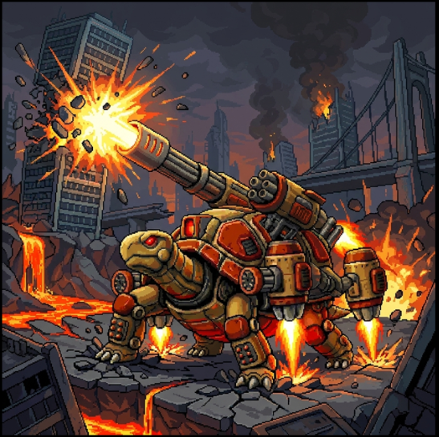

在「新星科技城」的遺蹟邊緣，曾沉睡著一隻自遠古時期便與地脈共生的巨型要塞龜。它原本是中立且溫和的守護者，直到太古火龍伊格尼斯降臨，將熾熱的始祖龍焰灌入其動力核心。
龍焰不僅喚醒了這尊沉睡的巨獸，更激發了它毀滅性的本能。在火焰的加持下，要塞龜背負的科技砲塔全面超頻，龜殼上的複合裝甲被燒得通紅。現在的泰坦不再是防禦的象徵，而是一座載滿火炮的戰爭要塞，它的每一步踏出都伴隨著大地的震顫，每一發砲火都宣告著伊格尼斯對這片土地無情支配的意志。
描述： 這是來自遠古巨石的戰爭咆哮。當導彈艙門開啟，整個畫面會因連續的發射與爆炸產生劇烈的震動感，呈現出重裝要塞傾瀉火力的極致壓迫力。在此不熄的火力網中，任何走位都將被無情封殺，唯有在連綿的爆炸中化為焦炭。
視覺感： 泰坦其原本厚重的龜殼兩側，橘紅色的機械導彈匣緩緩升起並展開。伴隨著劇烈的氣流噴發與火光，數枚索命追跡彈接連升空。導彈在空中劃出圓滑且致命的追蹤弧線，尾部拖曳著濃烈的黑煙與橘黃色火星。
描述： 這是來自要塞核心的無情鎮壓。當槍管開始咆哮，這片大地上便再無可供躲藏的死角。在此極致的火力傾瀉中，感受何謂真正的槍林彈雨，呈現出一座戰爭要塞全火力掃蕩的絕對壓迫感與重工業暴力美學。
視覺感： 泰坦將其頭部兩側與前肢關節處瞬間伸出四管發出刺眼紅光的重型機槍。隨著槍管的高速旋轉，大量子彈如狂風暴雨般噴吐而出。彈幕由兩種不同型態的子彈交織而成：一種是帶有亮藍色科技光暈的穿甲彈，另一種則是包裹著橘紅火焰的高爆彈。這四道火線在空中交錯，形成一片高低起伏、極度密集的推進火網。子彈飛射時拖曳著明亮的尾跡，伴隨著飛濺的彈殼與震耳欲聾的機械開火聲。
描述： 「這是來自遠古巨馱的最沉重吐息。當背上的巨砲揚起，天空亦將為之崩塌。在此『重淵』的質量面前，任何閃避都顯得多餘，展現出「一擊必殺、粉碎一切」的絕對重工業暴力美學。
視覺感：泰坦背甲正上方的巨大主砲管爆發出數道環狀的橘紅色蓄力閃光。伴隨著極具魄力的全螢幕震動與沉悶的砲擊聲，數枚巨大的重型砲彈呼嘯而出。砲彈在空中以沉重且充滿壓迫感的姿態平緩推進，巨大的體積幾乎封鎖了前方的中段空間。
描述： 這是來自遠古巨石的終極狂怒。當業火之盾揚起，要塞的重量將化為不可阻擋的死劫。在此『霸王』的衝鋒路徑上，防禦已成笑話，唯有化作焦炭，才是對這股狂暴之力的唯一敬意。詮釋了「無堅不摧」與「極致重碾」的重工業暴力美學。
視覺感： 泰坦將身軀呈現出高度的流線型衝刺姿態，背部與後肢的噴射引擎爆發出極度強烈的亮黃色與橘紅色尾焰。在其正前方，狂暴的龍焰交織凝聚，形成了一面巨大的、呈現半月形且帶有清晰的業火巨盾。泰坦以與其龐大體型極不相符的驚人高速向前橫衝，衝刺軌跡上會拉拽出扭曲的熱浪殘影與四散的火星。
描述： 這是來自太古巨獸的最終輓歌。當黃金的雷光閃耀，所有的慈悲都已耗盡。在此『星爆瀑』的洗禮下，任何的掙扎與防禦皆是虛妄，帶著扭曲空間的金色電流特效與強烈的畫面震顫，以排山倒海之勢吞噬整個戰場，完美詮釋了「飽和式轟炸」的終極暴力美學。
視覺感：泰坦進入了極度狂暴的狀態，其龐大的身軀與所有的火砲發射口皆被狂暴閃爍的「黃金過載雷霆」緊緊纏繞。伴隨著震碎螢幕的連續轟鳴聲，泰坦將所有武器在同一時間全數發射。這些大小不一、軌跡各異的毀滅兵器交織成一面令人窒息的「實體死亡之牆」，